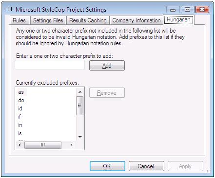

|
TypeName |
FieldNamesMustNotUseHungarianNotation |
|
CheckId |
SA1305 |
|
Category |
Naming Rules |
Cause
The name of a field or variable in C# uses Hungarian notation.
Rule Description
A violation of this rule occurs when Hungarian notation is used in the naming of fields and variables. The use of Hungarian notation has become widespread in C++ code, but the trend in C# is to use longer, more descriptive names for variables, which are not based on the type of the variable but which instead describe what the variable is used for.
In addition, modern code editors such as Visual Studio make it easy to identify type information for a variable or field, typically by hovering the mouse cursor over the variable name. This reduces the need for Hungarian notation.
StyleCop assumes that any variable name that begins with one or two lower-case letters followed by an upper-case letter is making use of Hungarian notation, and will flag a violation of this rule in each case. It is possible to declare certain prefixes as legal, in which case they will be ignored. For example, a variable named onExecute will appear to StyleCop to be using Hungarian notation, when in reality it is not. Thus, the on prefix should be flagged as an allowed prefix.
To configure the list of allowed prefixes, bring up the StyleCop settings for a project, and navigate to the Hungarian tab, as shown below:

Adding a one or two letter prefix to this list will cause StyleCop to ignore variables or fields which begin with this prefix.
If the field or variable name is intended to match the name of an item associated with Win32 or COM, and thus needs to use Hungarian notation, place the field or variable within a special NativeMethods class. A NativeMethods class is any class which contains a name ending in NativeMethods, and is intended as a placeholder for Win32 or COM wrappers. StyleCop will ignore this violation if the item is placed within a NativeMethods class.
How to Fix Violations
To fix a violation of this rule, remove the Hungarian notation from the field or variable name, or place the item within a NativeMethods class if appropriate.